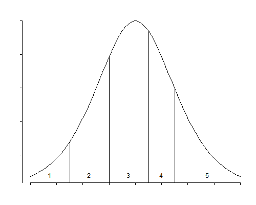

Most of the models discussed so far are appropriate for the analysis of nominal responses. They may be applied to ordinal data as well, but the models make no explicit use of the fact that the response categories are ordered. We now consider models designed specifically for the analysis of responses measured on an ordinal scale. Our discussion follows closely McCullagh (1980).
We will illustrate the application of models for ordinal data using the data in Table 6.4, which was first published by Madsen (1976) and was reproduced in Agresti (1990, p. 341). The table classifies 1681 residents of twelve areas in Copenhagen in terms of the type of housing they had, their feeling of influence on apartment management, their degree of contact with other residents, and their satisfaction with housing conditions.
Table 6.4. Housing Condition in Copenhagen
| Housing Type | Influence | Contact | Satisfaction | ||
| low | medium | high | |||
| Tower block | low | low | 21 | 21 | 28 |
| high | 14 | 19 | 37 | ||
| medium | low | 34 | 22 | 36 | |
| high | 17 | 23 | 40 | ||
| high | low | 10 | 11 | 36 | |
| high | 3 | 5 | 23 | ||
| Apartments | low | low | 61 | 23 | 17 |
| high | 78 | 46 | 43 | ||
| medium | low | 43 | 35 | 40 | |
| high | 48 | 45 | 86 | ||
| high | low | 26 | 18 | 54 | |
| high | 15 | 25 | 62 | ||
| Atrium houses | low | low | 13 | 9 | 10 |
| high | 20 | 23 | 20 | ||
| medium | low | 8 | 8 | 12 | |
| high | 10 | 22 | 24 | ||
| high | low | 6 | 7 | 9 | |
| high | 7 | 10 | 21 | ||
| Terraced houses | low | low | 18 | 6 | 7 |
| high | 57 | 23 | 13 | ||
| medium | low | 15 | 13 | 13 | |
| high | 31 | 21 | 13 | ||
| high | low | 7 | 5 | 11 | |
| high | 5 | 6 | 13 | ||
In our analysis of these data we will treat housing satisfaction as an ordered response, with categories low, medium and high, and the other three factors as explanatory variables.
All of the models to be considered in this section arise from focusing on the cumulative distribution of the response. Let \( \pi_{ij} = \Pr\{Y_i=j\} \) denote the probability that the response of an individual with characteristics \( \boldsymbol{x}_i \) falls in the \( j \)-th category, and let \( \gamma_{ij} \) denote the corresponding cumulative probability
\[\tag{6.18}\gamma_{ij} = \Pr\{ Y_i \le j\}\]that the response falls in the \( j \)-th category or below, so
\[\tag{6.19}\gamma_{ij} = \pi_{i1} + \pi_{i2} + \ldots + \pi_{ij}.\]Let \( g(.) \) denote a link function mapping probabilities to the real line. Then the class of models that we will consider assumes that the transformed cumulative probabilities are a linear function of the predictors, of the form
\[\tag{6.20}g(\gamma_{ij}) = \theta_j + \boldsymbol{x}_i'\boldsymbol{\beta}.\]In this formulation \( \theta_j \) is a constant representing the baseline value of the transformed cumulative probability for category \( j \), and \( \boldsymbol{\beta} \) represents the effect of the covariates on the transformed cumulative probabilities. Since we write the constant explicitly, we assume that the predictors do not include a column of ones. Note that there is just one equation: if \( x_{ik} \) increases by one, then all transformed cumulative probabilities increase by \( \beta_k \). Thus, this model is more parsimonious than a multinomial logit or a hierarchical logit model; by focusing on the cumulative probabilities we can postulate a single effect. We will return to the issue of interpretation when we consider specific link functions.
These models can also be interpreted in terms of a latent variable. Specifically, suppose that the manifest response \( Y_i \) results from grouping an underlying continuous variable \( Y_i^* \) using cut-points \( \theta_1 < \theta_2 < \ldots < \theta_{J-1} \), so that \( Y_i \) takes the value 1 if \( Y_i^* \) is below \( \theta_1 \), the value 2 if \( Y_i^* \) is between \( \theta_1 \) and \( \theta_2 \), and so on, taking the value \( J \) if \( Y_i^* \) is above \( \theta_{J-1} \). Figure 6.4 illustrates this idea for the case of five response categories.
Figure 6.4 An Ordered Response and its Latent Variable
Suppose further that the underlying continuous variable follows a linear model of the form
\[\tag{6.21}Y_i^* = \boldsymbol{x}_i'\boldsymbol{\beta}^* + \epsilon_i,\]where the error term \( \epsilon_i \) has c.d.f. \( F(\epsilon_i) \). Then, the probability that the response of the \( i \)-th individual will fall in the \( j \)-th category or below, given \( \boldsymbol{x}_i \), satisfies the equation
\[\tag{6.22}\gamma_{ij} = \Pr\{ Y_i^* < \theta_j\} = \Pr\{ \epsilon_i < \theta_j - \boldsymbol{x}_i'\boldsymbol{\beta}^*\} = F(\theta_j - \boldsymbol{x}_i'\boldsymbol{\beta}^*)\]and therefore follows the general form in Equation (6.20) with link given by the inverse of the c.d.f. of the error term
\[\tag{6.23}g(\gamma_{ij}) = F^{-1}(\gamma_{ij}) = \theta_j - \boldsymbol{x}_i'\boldsymbol{\beta}^*\]and coefficients \( \boldsymbol{\beta}^*=-\boldsymbol{\beta} \) differing only in sign from the coefficients in the cumulative link model. Note that in both formulations we assume that the predictors \( \boldsymbol{x}_i \) do not include a column of ones because the constant is absorbed in the cutpoints.
With grouped data the underlying continuous variable \( Y^* \) will have real existence and the cutpoints \( \theta_j \) will usually be known. For example income data are often collected in broad categories, and all we known is the interval where an observation falls, i.e. \( < \) $25,000, between $25,000 and $50,000, and so on.
With ordinal categorical data the underlying continuous variable will often represent a latent or unobservable trait, and the cutpoints will not be known. This would be the case, for example, if respondents are asked whether they support a balance budget amendment, and the response categories are strongly against, against, neutral, in favor, and strongly in favor. We could imagine an underlying degree of support \( Y_i^* \) and thresholds \( \theta_1 \) to \( \theta_4 \), such that when the support is below \( \theta_1 \) one is strongly against, when the support exceeds \( \theta_1 \) but not \( \theta_2 \) one is against, and so on, until the case where the support exceeds \( \theta_4 \) and one is strongly for the amendment.
While the latent variable interpretation is convenient, it is not always necessary, since some of the models can be interpreted directly in terms of the transformation \( g(.) \) of the cumulative probabilities.
The first model we will consider is a direct extension of the usual logistic regression model. Instead of applying the logit transformation to the response probabilities \( \pi_{ij} \), however, we apply it to the cumulative response probabilities \( \gamma_{ij} \), so that
\[\tag{6.24}\mbox{logit}(\gamma_{ij}) = \log\frac{\gamma_{ij}}{1-\gamma_{ij}} = \theta_j + \boldsymbol{x}_i'\boldsymbol{\beta}.\]Some authors refer to this model as the ordered logit model, because it is a generalization of the logit model to ordered response categories. McCullagh (1980) calls it the proportional odds model, for reasons that will be apparent presently. Exponentiating (6.24) we find that the odds of \( Y_{ij} \le j \), in words, the odds of a response in category \( j \) or below, are
\[\tag{6.25}\frac{\gamma_{ij}}{1-\gamma_{ij}} = \lambda_j \exp\{\boldsymbol{x}_i'\boldsymbol{\beta}\}\]where \( \lambda_j=\exp\{\theta_j\} \). The \( \lambda_j \) may be interpreted as the baseline odds of a response in category \( j \) or below when \( x=0 \). The effect of the covariates \( x \) is to raise or lower the odds of a response in category \( j \) or below by the factor \( \exp\{\boldsymbol{x}_i'\boldsymbol{\beta}\} \). Note that the effect is a proportionate change in the odds of \( Y_i \le j \) for all response categories \( j \). If a certain combination of covariate values doubles the odds of being in category 1, it also doubles the odds of being in category 2 or below, or in category 3 or below. Hence the name proportional odds.
This model may also be obtained from the latent variable formulation assuming that the error term \( \epsilon_i \) has a standard logistic distribution. In this case the cdf is
\[\tag{6.26}F(\eta)= \frac{\exp\{ \eta\}}{1 + \exp\{ \eta \}}\]and the inverse cdf is the logit transformation. The \( \boldsymbol{\beta}^* \) coefficients may then be interpreted as linear effects on the underlying continuous variable \( Y_i^* \).
The proportional odds model is not a log-linear model, and therefore it can not be fit using the standard Poisson trick. It is possible, however, to use an iteratively re-weighted least squares algorithm very similar to the standard algorithm for generalized linear models, for details see McCullagh (1980).
We will illustrate this model applying it to the housing satisfaction data in Table 6.4. Let us start by noting that the log-likelihood for a saturated multinomial model that treats each of the 24 covariate patterns as a different group is -1715.71. Fitting a proportional odds model with additive effects of housing type, influence in management and contact with neighbors, yields a log-likelihood of -1739.57, which corresponds to a deviance (compared to the saturated multinomial model) of 47.73 on 40 d.f. To calculate the degrees of freedom note that the saturated multinomial model has 48 parameters (2 for each of 24 groups), while the additive proportional odds model has only 8 (2 threshold parameters, 3 for housing type, 2 for influence and one for contact). The 95% critical point of the \( \chi^2_{40} \) distribution is 55.8, so you might think that this model fits the data.
To be thorough, however, we should investigate interaction effects. The models with one two-factor interaction have log-likelihoods of -1739.47 (including contact \( \times \) influence), -1735.24 (including housing \( \times \) contact), and -1728.32 (including housing \( \times \) influence), with corresponding deviance reductions of 0.21, 8.67 and 22.51, at the expense of 2, 3 and 6 degrees of freedom, respectively. Clearly the only interaction of note is that of housing \( \times \) influence, which has a P-value of 0.001. Adding this term gives a model deviance of 25.22 on 34 d.f. and an excellent fit to the data.
Table 6.5 shows parameter estimates for the final model with all three predictors and a housing \( \times \) influence interaction. The table lists the cutpoints and the regression coefficients.
Table 6.5. Parameter Estimates for Ordered Logit Model
(Latent Variable Formulation)
| Parameter | Estimate | Std. Error | \(z\)-ratio |
| Apartments | -1.1885 | .1972 | -6.026 |
| Atrium house | -.6067 | .2446 | -2.481 |
| Terraced house | -1.6062 | .2410 | -6.665 |
| Influence medium | -.1390 | .2125 | -0.654 |
| Influence high | .8689 | .2743 | 3.167 |
| Contact high | .3721 | .0960 | 3.876 |
| Apart \(\times\) Influence med | 1.0809 | .2658 | 4.066 |
| Apart \(\times\) Influence high | .7198 | .3287 | 2.190 |
| Atrium \(\times\) Influence med | .6511 | .3450 | 1.887 |
| Atrium \(\times\) Influence high | -.1556 | .4105 | -0.379 |
| Terrace \(\times\) Influence med | .8210 | .3307 | 2.483 |
| Terrace \(\times\) Influence high | .8446 | .4303 | 1.963 |
| Cutpoint 1 | -.8881 | .1672 | |
| Cutpoint 2 | .3126 | .1657 |
Note first the cutpoints: -.89 and .31, corresponding to cumulative odds of 0.41 and 1.37, or to cumulative probabilities of 0.29 and 0.58, for the reference cell. Considering residents of tower blocks with low influence in management and low contact with neighbors, we estimate that 29% have low satisfaction, 29% (58-29) have medium satisfaction, and 42% (100-58) have high satisfaction. (These values are fairly close to the observed proportions.)
Before we discuss interpretation of the remaining coefficients, we must note that I have reported the coefficients corresponding to the latent variable formulation (the \( \boldsymbol{\beta}^* \)’s) rather than the cumulative link coefficients (the \( \boldsymbol{\beta} \)’s), which have opposite sign. Thus, a positive coefficient is equivalent to a shift to the right on the latent scale, which increases the odds of being to the right of a cutpoint. Equation (6.24) models the odds of being to the left of a cutpoint, which would then decrease. I prefer the sign used here because the interpretation is more straightforward. A positive coefficient increases one’s underlying satisfaction, which makes a ‘high’ response more likely.
The coefficient of contact indicates that residents who have high contact with their neighbors are generally more satisfied than those who have low contact. The odds of high satisfaction (as opposed to medium or low), are 45% higher for high contact than for low contact, as are the odds of medium or high satisfaction (as opposed to low). The fact that the effect of contact on the odds is the same 45% for the two comparisons is a feature of the model.
To interpret the effects of the next two variables, type of housing and degree of influence, we have to allow for their interaction effect. One way to do this is to consider the effect of type of housing when the residents feel that they have low influence on management; then residents of apartments and houses (particularly terraced houses) are less satisfied than residents of tower blocks. Feeling that one has some influence on management generally increases satisfaction; the effect of having high rather than low influence is to increase the odds of medium or high satisfaction (as opposed to low) by 138% for residents of tower blocks, 390% for apartment dwellers, 104% for residents of atrium houses and 455% for those who live in terraced houses. Having medium influence is generally better than having low influence (except for tower clock residents), but not quite as good as having high influence (except possibly for residents of atrium houses).
Although we have interpreted the results in terms of odds, we can also interpret the coefficients in terms of a latent variable representing degree of satisfaction. The effect of having high contact with the neighbors, as compared to low contact, is to shift one’s position on the latent satisfaction scale by 0.37 points. Similarly, having high influence on management, as compared to low influence, shifts one’s position by an amount that varies from 0.71 for residents of atrium houses to 1.71 for residents of terraced houses. Interpretation of these numbers must be done by reference to the standard logistic distribution, which is depicted in Figure 6.4. This symmetric distribution has mean 0 and standard deviation \( \pi/\sqrt 3=1.81 \). The quartiles are \( \pm 1.1 \), and just over 90% of the area lies between -3 and 3.
The ordered probit model, first considered by Aitchison and Silvey (1957), results from modeling the probit of the cumulative probabilities as a linear function of the covariates, so that
\[\tag{6.27}\Phi^{-1}(\gamma_{ij}) = \theta_j + \boldsymbol{x}_i'\boldsymbol{\beta}\]where \( \Phi() \) is the standard normal cdf. The model can also be obtained from the latent-variable formulation assuming that the error term has a standard normal distribution, and this is usually the way one would interpret the parameters.
Estimates from the ordered probit model are usually very similar to estimates from the ordered logit model—as one would expect from the similarity of the normal and the logistic distributions—provided one remembers to standardize the coefficients to correct for the fact that the standard normal distribution has variance one, whereas the standard logistic has variance \( \pi^2/3 \).
For the Copenhagen data, the ordered probit model with an interaction between housing type and influence has a log-likelihood of -1728.67, corresponding to a deviance of 25.9 on 34 d.f., almost indistinguishable from the deviance for the ordered logit model with the same terms. Table 6.6 shows parameter estimates for this model.
Table 6.6. Parameter Estimates for Ordered Probit Model
(Latent Variable Formulation)
| Parameter | Estimate | Std. Error | \(z\)-ratio |
| Apartments | -.7281 | .1205 | -6.042 |
| Atrium house | -.3721 | .1510 | -2.464 |
| Terraced house | -.9790 | .1456 | -6.725 |
| Influence medium | -.0864 | .1303 | -0.663 |
| Influence high | .5165 | .1639 | 3.150 |
| Contact high | .2285 | .0583 | 3.918 |
| Apart \(\times\) Influence med | .6600 | .1626 | 4.060 |
| Apart \(\times\) Influence high | .4479 | .1971 | 2.273 |
| Atrium \(\times\) Influence med | .4109 | .2134 | 1.925 |
| Atrium \(\times\) Influence high | -.0780 | .2496 | -0.312 |
| Terrace \(\times\) Influence med | .4964 | .2016 | 2.462 |
| Terrace \(\times\) Influence high | .5217 | .2587 | 2.016 |
| Cutpoint 1 | -.5440 | .1023 | |
| Cutpoint 2 | .1892 | .1018 |
The cutpoints can be interpreted in terms of z-scores: the boundary between low and medium satisfaction is at \( z=-0.54 \) and the boundary between medium and high satisfaction is at \( z=0.19 \). These values leave \( \Phi(-.54)=0.29 \) or 29% of the reference group in the low satisfaction category, \( \Phi(0.19)-\Phi(-0.54)=0.28 \) or 28% in the medium satisfaction category, and \( 1-\Phi(0.19)=0.42 \) or 42% in the high satisfaction category.
The remaining coefficients can be interpreted as in a linear regression model. For example, having high contact with the neighbors, compared to low contact, increases one’s position in the latent satisfaction scale by 0.23 standard deviations (or increases one’s \( z \)-score by 0.23), everything else being equal.
Note that this coefficient is very similar to the equivalent value obtained in the ordered logit model. A shift of 0.37 in a standard logistic distribution, where \( \sigma=\pi/\sqrt 3= 1.81 \), is equivalent to a shift of \( 0.37/1.81=0.21 \) standard deviations, which in turn is very similar to the ordered probit estimate of 0.23 standard deviations. A similar comment applies to the other coefficients. You may also wish to compare the Wald tests for the individual coefficients in Tables 6.5 and 6.6, which are practically identical.
A third possible choice of link is the complementary log-log link, which leads to the model
\[\tag{6.28}\log(-\log( 1- \gamma_{ij}) ) = \theta_j + \boldsymbol{x}_i'\boldsymbol{\beta}\]This model may be interpreted in terms of a latent variable having a (reversed) extreme value (log Weibull) distribution, with cdf
\[\tag{6.29}F(\eta) = 1 - \exp\{ -\exp \{\eta\} \}\]This distribution is asymmetric, it has mean equal to negative Euler’s constant \( -0.57722 \) and variance \( \pi^2/6=1.6449 \). The median is \( \log\log 2= -0.3665 \) and the quartiles are -1.2459 and 0.3266. Note that the inverse cdf is indeed, the complementary log-log transformation in Equation (6.28).
This model can also be interpreted in terms of a proportional hazards model. The hazard function plays a central role in survival analysis, and will be discussed in detail in the next Chapter.
The general cumulative link model of Section 6.5.2 will work with any monotone link function mapping probabilities to the real line, but the three choices mentioned here, namely the logit, probit, and complementary log-log, are by far the most popular ones. McCullagh (1980) has extended the basic model by relaxing the assumption of constant variance for the latent continuous variable. His most general model allows a separate scale parameter for each multinomial observation, so that
\[\tag{6.30}g(\gamma_{ij}) = \frac{\theta_j+\boldsymbol{x}_i'\boldsymbol{\beta}}{\tau_i}\]where the \( \tau_i \) are unknown scale parameters. A constraint, such as \( \tau_1=0 \), is required for identification. More generally, \( \tau_i \) may be allowed to depend on a vector of covariates.
An alternative approach to the analysis of ordinal data is to assign scores to the response categories and then use linear regression to model the mean score. Ordinary least squares procedures are not appropriate in this case, but Grizzle et al. (1969) have proposed weighted least-squares procedures that make proper allowances for the underlying independent multinomial sampling scheme. For an excellent discussion of these models see Agresti (1990, Section 9.6).
A similar approach, used often in two-way contingency tables corresponding to one predictor and one response, is to assign scores to the rows and columns of the table and to use these scores to model the interaction term in the usual log-linear model. Often the scores assigned to the columns are the integers \( 1,2, \ldots, J-1 \), but other choices are possible. If integer scores are used for both rows and columns, then the resulting model has an interesting property, which has been referred to as uniform association. Consider calculating an odds ratio for adjacent rows \( i \) and \( i+1 \), across adjacent columns or response categories \( j \) and \( j+1 \), that is
\[\tag{6.31}\rho_{ij}=\frac{ \pi_{i,j} / \pi_{i,j+1}} { \pi_{i+1,j} / \pi_{i+1,j+1} }\]Under the additive log-linear model of independence, this ratio is unity for all \( i \) and \( j \). Introducing an interaction term based on integer scores, of the form \( (\alpha\beta)_{ij}= \gamma i j \), makes the odds ratio constant across adjacent categories. This model often produces fits similar to the proportional odds model, but the parameters are not so easily interpreted. For further details see Haberman (1974), Goodman (1979) or Agresti (1990, Section 8.1).
A fourth family of models for ordinal responses follows from introducing constraints in the multinomial logit model. Let \( \boldsymbol{\beta}_j \) denote the vector of coefficients for the \( j \)-th equation, comparing the \( j \)-th category with the last category, for \( j=1, 2, \ldots, J-1 \). The most restrictive model assumes that these coefficients are the same for all contrasts, so \( \boldsymbol{\beta}_j=\boldsymbol{\beta} \) for all \( j \). A less restrictive assumption is that the coefficients have a linear trend over the categories, so that \( \boldsymbol{\beta}_j = j \boldsymbol{\beta} \). Anderson (1984) has proposed a model termed the stereotype model where the coefficients are proportional across categories, so \( \boldsymbol{\beta}_j = \gamma_j \boldsymbol{\beta} \), with unknown proportionality factors given by scalars \( \gamma_j \).
One advantage of the cumulative link models considered here is that the parameter estimates refer to the cumulative distribution of the manifest response (or the distribution of the underlying latent variable) and therefore are not heavily dependent on the actual categories (or cutpoints) used. In particular, we would not expect the results to change much if we were to combine two adjacent categories, or if we recoded the response using fewer categories. If the cumulative odds are indeed proportional before collapsing categories, the argument goes, they should continue to be so afterwards.
In contrast, inferences based on log-linear or multinomial logit models apply only to the actual categories used. It is quite possible, for example, that odds ratios that are relatively constant across adjacent categories will no longer exhibit this property if some of the categories are combined. These considerations are particularly relevant if the categories used are somewhat arbitrary.